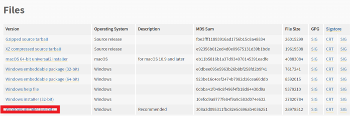
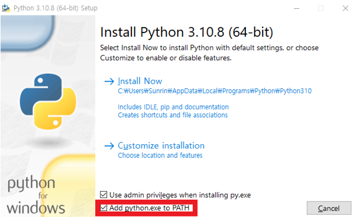
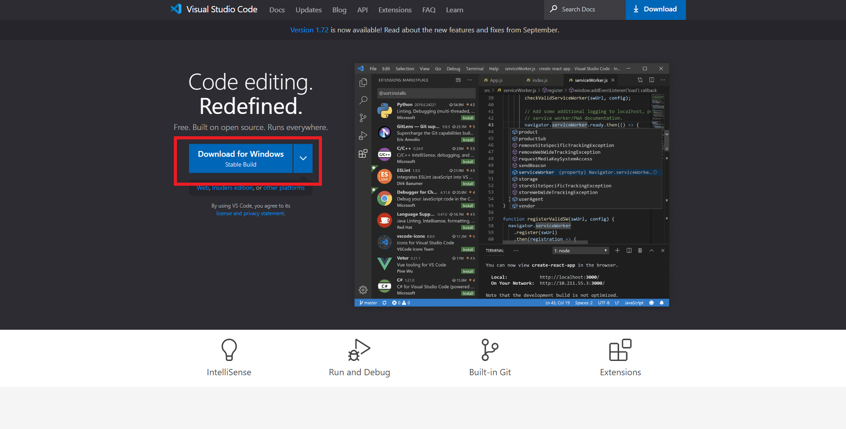
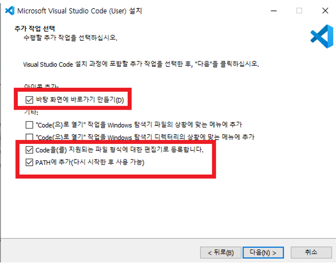
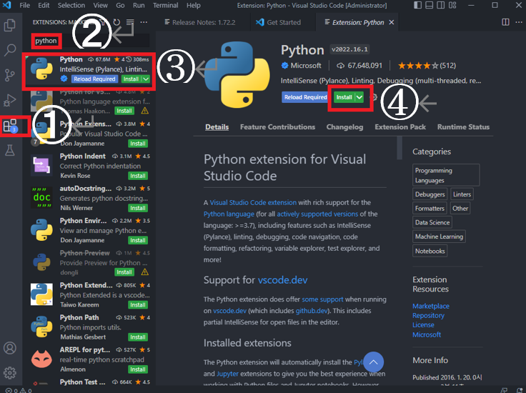
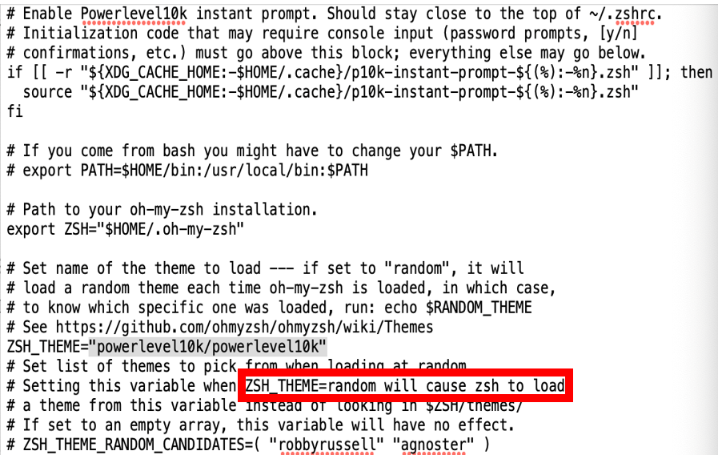
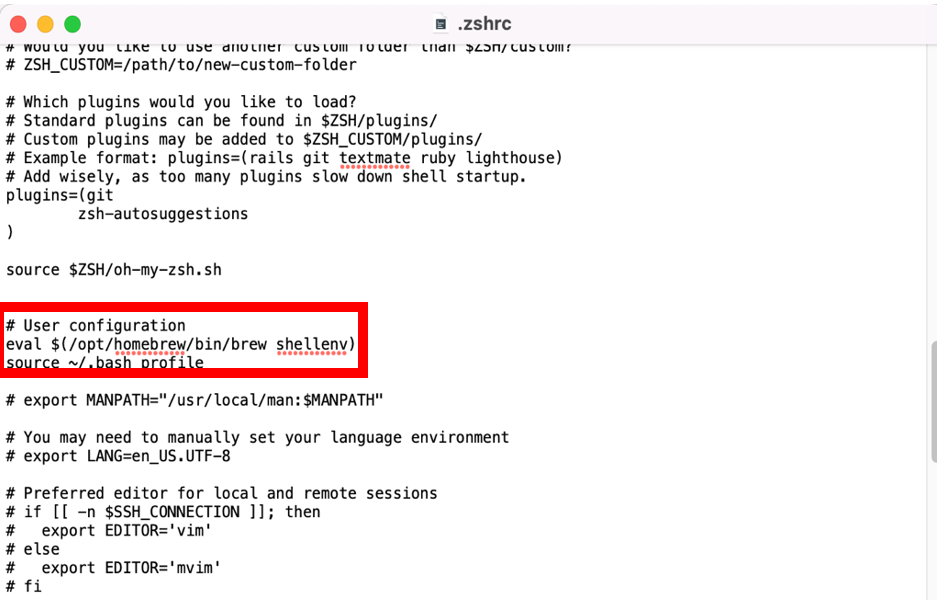
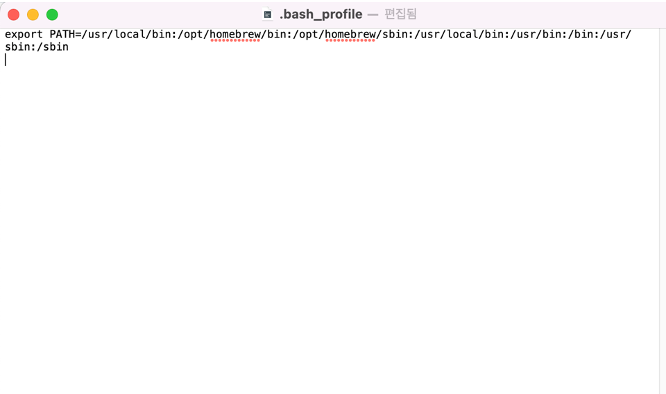
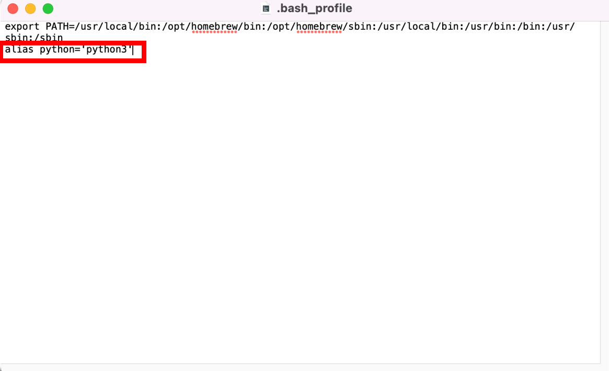
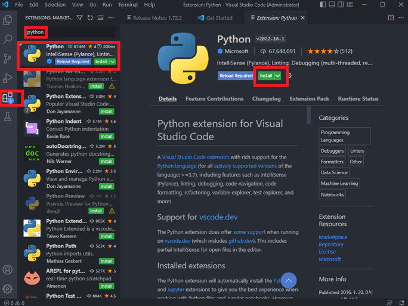

모든 개발환경세팅가이드는 포멧된 상태를 기준으로 하고 있습니다.
MAC OS 사용자라면 프로그램다운로드 - M1칸으로 이동해주세요.
프로그램다운로드 - 윈도우
1. 링크에 접속
2. 스크롤을 내려 Files 칸에서 Windows installer (64-bit) 을 다운받아 실행한다

3. Add python.exe to PATH를 선택한후 Install Now를 눌러 설치를 진행한다

4. 설치가 완료되면 Close를 누르고 나온다
5. 비주얼스튜디오에 접속한 뒤 Download for Windows를 클릭하여 Visual Studio Code(코딩을 위한 프로그램) 설치 프로그램을 받은 뒤 실행한다.

6. 설치 프로그램에서 라이센스를 동의 한 뒤 다음을 누르고 ‘바탕화면에 아이콘 추가’,
’Code를 지원되는 파일 형식에 대한 편집기로 등록합니다.’,‘PATH의 추가’ 부분에 체크 되어있음을 확인하고 설치를 진행한다.

7. Visual Studio Code를 실행한 뒤 좌측에 위치한 Extensions 부분에서 Python Extension을 검색 한뒤 설치한다.

프로그램다운로드 - M1
1.링크를 통해 iterm2을(더욱 유용한 터미널) 설치한다.
2.Iterm2를 실행하고 위와 같은 코드를 입력하여 oh-my-zsh를(터미널 사용을 쉽게 해주는 툴) 설치한다.
sh -c "$(curl -fsSL https://raw.github.com/robbyrussell/oh-my-zsh/master/tools/install.sh)”
3.터미널을 재시작한 다음 위와 같은 코드를 입력하여 터미널의 디자인을 꾸며주는 powerlever10k를 설치한다.
git clone --depth=1 https://github.com/romkatv/powerlevel10k.git ${ZSH_CUSTOM:-$HOME/.oh-my-zsh/custom}/themes/powerlevel10k
4. open ~/.zshrc을 입력한 뒤 ZSH_THEME= 부분을 "powerlevel10k/powerlevel10k"로 바꾸고 터미널을 재시작 한다.

5. https://is.gd/YsYYr4 의 3. powerlevel10k를 참고하여 설정 부분을 참고하여 자신에 맞게 설정한다.
만약 설정부분이 뜨지 않는다면 source ~/.zshrc를 입력하면 된다.
6. Homebrew(설치를 쉽게 해주는 일종의 툴) 설치
/bin/bash -c "$(curl -fsSL https://raw.githubusercontent.com/Homebrew/install/HEAD/install.sh)"
7.open ~/.zshrc 터미널에 입력한 뒤 # User configuration 부분에 eval $(/opt/homebrew/bin/brew shellenv) source ~/.bash_profile 를 입력한다.

8. open ~/.bash_profile 를 실행한 뒤
export PATH=/usr/local/bin:/opt/homebrew/bin:/opt/homebrew/sbin:/usr/local/bin:/usr/bin:/bin:/usr/sbin:/sbin 를 입력한다.

9. Homebrew를 통한 python 설치
brew install python
10. open ~/.bash_profile 를 실행한 뒤 alias python='python3' 을 추가한다.

11. 터미널을 재시작 한 뒤 python –version을 했을 때 python 3.XXXXX로 뜨면 설치 성공!
12. https://code.visualstudio.com/에 접속한 뒤 Download Mac Universal 을 클릭하여 Visual Studio Code(코딩을 위한 프로그램) 설치 프로그램을 받은 뒤 실행한다.
13. 압축을 푼 뒤 실행하고 좌측에 위치한 Extensions 부분에서 Python Extension을 검색 해 설치한다.
